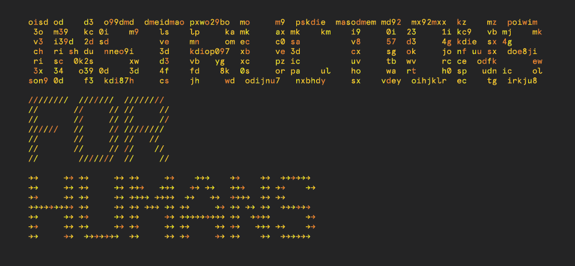

This website has been archived and is longer updated. For more about this project, see art.peteashton.com.
Instructions for Humans - A Cargo Cult for Artificial Intelligence
Instructions for Humans is a new body of work by artist Pete Ashton exploring human interactions with the massive, opaque systems that mediate our experience of the world and inform our understanding. The focus is on contemporary data surveillance through machine learning systems, using them as a framework to explore how systems of control can be abused by agents of power.
To stay informed and be reminded of events happening for Instructions For Humans, and many other things besides, you’re best off subscribing to Pete’s newsletter.

It is anchored on an exhibition at BOM (Birmingham Open Media) in the centre of Birmingham, a city in the centre of Britain, a country in the North West of Europe.
The exhibition runs from September 12th to December 16th 2017 and is open Wednesday to Saturday, 12-5pm.
Ashton is resident in the gallery during opening hours devising new work in response to emerging issues in surveillance, data collection and artificial intelligence systems. The show also features three interactive works by Nye Thompson, Kyle Macdonald and Ashton.
The work is a constantly evolving exercise that currently resists easy definition. It’s a research project, a performance, a residency, an educational resource, a series of collaborations, a production line, and many other things no doubt. This is deliberate.
Primarily the work is about meaning in a world where truth and reason feel twisted by forces we don’t understand.
This website serves to collate and present the work, documentation of the work and work about the documentation of the work.
Documentation
- Daily diary on blog.peteashton.com
- Weekly-ish newsletter. Subscribe here.
- Photo documentation is currently in this Dropbox folder.
Events
There will be numerous public events during the show. These are all listed on the Events for Humans page.
References
This work is the culmination of many years research and thinking about cameras, data, AI, politics, systems and more.
All books are available to browse in the gallery. Some articles are also printed out for reading.
Funding
Art does not emerge from a vacuum. In order to make work in a late-capitalist economy one requires cash.
Instructions for Humans was commissioned by BOM (Birmingham Open Media) who paid me an exhibition fee of £700.
I applied for a Grant for the Arts from the Arts Council, a fund anyone can apply for, and was awarded £13,420 to cover the development and presentation of the work. A requirement of this award is to display their logo, which I am happy to do.

Accepting state funding for art, particularly that which is explicitly funnelled from gambling, brings a swathe of responsibilities and considerations which I take seriously. While “value for money” is never a useful metric to judge anything by, I respect and honour the opportunities this award has given me.
Arts Council money was 10% match-funded with earnings from work related to this show, such as workshops and talks. A small inheritance subsidised the year spent preparing for this work. My family provides an implicit the safety net in case it all goes horribly wrong.
I say all this to emphasise that access to the ability to make art is a privilege not available to all in our society, which is why so many artists are white and (upper)middle class. This is wrong. We should all have the right to be artists and to use our humanity for more than earning coin.